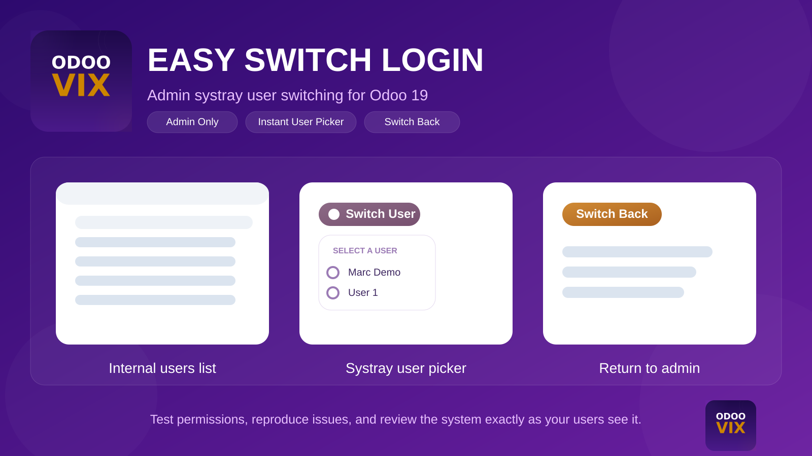
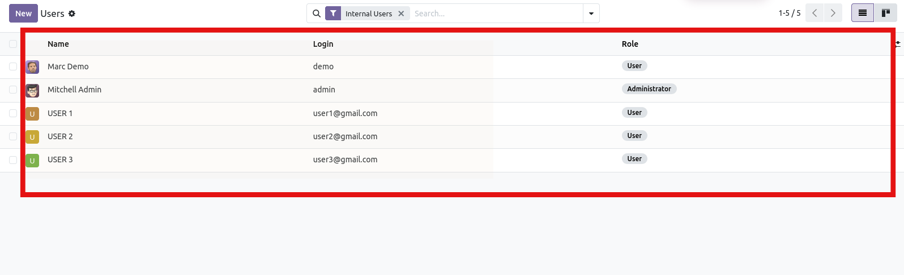
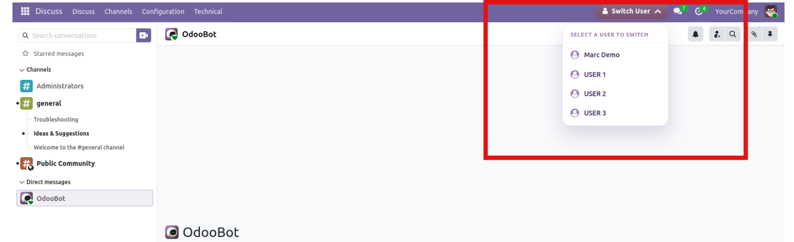
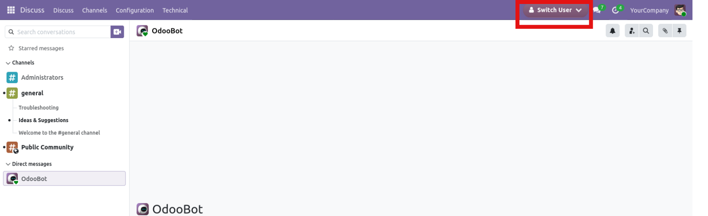
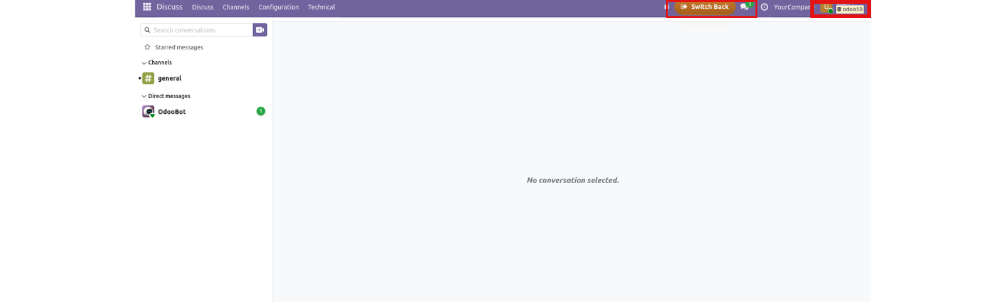

Let administrators switch into any internal user account from the Odoo systray, validate permissions, troubleshoot user issues, and safely switch back to the original admin session.

A focused admin utility for teams that need to review access rights, reproduce user issues, and move between admin and user sessions without handling passwords.
The systray switch option is shown only for administrators, keeping the login handoff limited to trusted users.
Open the dropdown, pick an internal user, and move into that session immediately from the top bar.
Validate menus, permissions, and flows exactly as the selected user sees them in the current database.
After switching into another account, the interface presents a clear switch-back action for returning to the original administrator.
The module adds a systray button for administrators, loads internal users in a compact dropdown, switches to the selected account without a password, and exposes a switch-back action in the impersonated session.
Review the main screens for user listing, systray access, user selection, and returning to the original admin account.




Follow these steps to enable administrator-led user switching in your Odoo database.
Add the module to your custom addons path, update the apps list, and install Easy Switch Login in Odoo 19.
Only administrators can see and use the systray switch option that opens the available internal user list.
Click the Switch User button in the top bar and choose the internal user account you want to review or test.
Use the Switch Back action displayed in the impersonated session to return to the original admin user quickly.
Common questions about permissions, supported users, and switch-back behavior.